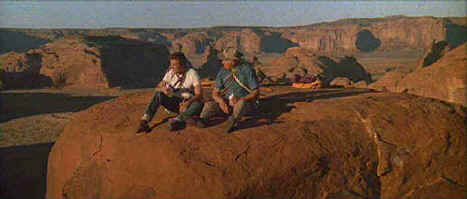

Universal/1975/129m/WS 2.35
 |
Top of the world, Clint! ©Universal |
The film opens with
great panache in a European city detailing a microfilm exchange and a neat murder of an
agent. Next we are introduced to Hemlock, a popular professor of Art History at an
American University. Ah, but just like Indiana Jones several years later, Hemlock’s
real life is mired in the internecine trails of international intrigue. The former US
agency killer is called back into the game to perform another couple of sanctions or hits
on enemy targets. Hemlock dispatches the first kill with dubious skill and is coerced into
the next leg of The Eiger Sanction by the devious manipulations of the albino head
of the secret agency
The mountain climbing sequences at the Eiger in Switzerland are
quite well made and are done on the actual location without the ubiquitous blue screen
use, adding an element of danger to the proceedings The suspense mechanisms are really
quite tame though. There’s a character named Miles Mellough who is dispatched rather
easily early in the film by Hemlock. Screamingly gay, Mellough even has a dog named
Faggot. The black woman added as a sexual partner for Hemlock is named Jemima, providing a
platform for some bad Aunt Jemima jokes. Then there’s Pope, a hapless fellow agent
dogging Hemlock’s heels and providing the latter with an opportunity for some
convenient agency bashing.
The romantic elements are bland and go on too long. They easily
could have been eliminated with no adverse effect on the production. Even the training
sequences in Monument Valley are repetitious and could have been tightened. Adapted from a
Trevanian novel, The Eiger Sanction loses power in trying to recall too much of the
novel. The Eiger Sanction does have more unmitigated racist attitude than any
hundred films today. In fact, it’s refreshing to see a film in which its characters
can display their warts without evaluation of marketplace PC.
Eastwood is cool in the role of Hemlock. You can believe him in
every circumstance. His mountain climbing is mind-boggling! George Kennedy offers a big,
bravado performance as sidekick Ben Bowman. Jack Cassidy brings some fun to the role of
Miles Mellough.
The source material for this DVD transfer of The Eiger
Sanction is unremarkable. Color vitality is quite good and the picture is consistently
sharp. There are scenes that have been overenhanced to mine the most information out of
the image. The result is image ringing and some straight edge break-up. Element grain is
handed with skill. Recorded in Dolby Digital 2-channel mono, the sound is clean, dialogue
easy to understand, and the music of John Williams excellent screen accompaniment.